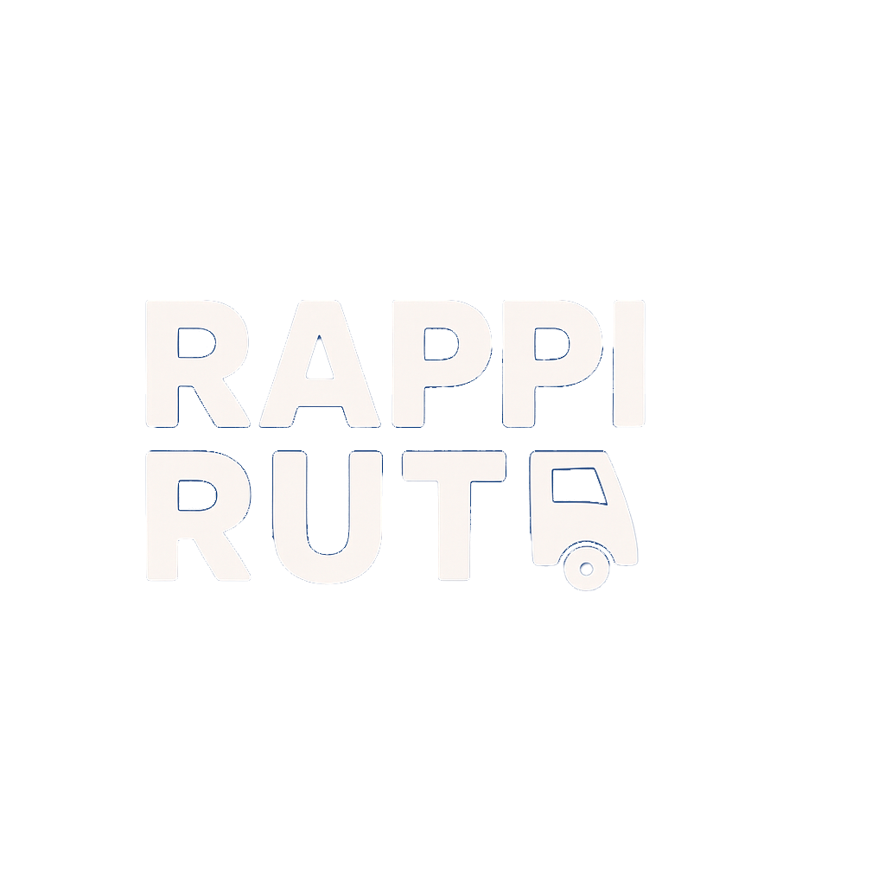
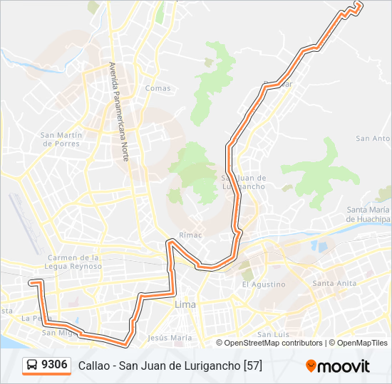

☰
✕
Inicio
Rutas
Horarios
Configuracion
Leonardo H.
Editar perfil
Cerrar sesión
Rutas de transporte público de Lima
Corredor Rojo
Metropolitano
Corredor Morado
Corredor Azul
Metropolitano - Alimentadores
Grupo Diez S.A.C
Transporte y Servicio La Esperanza S.A.
Consorcio S4
Virgen de la Asuncion S.A.
